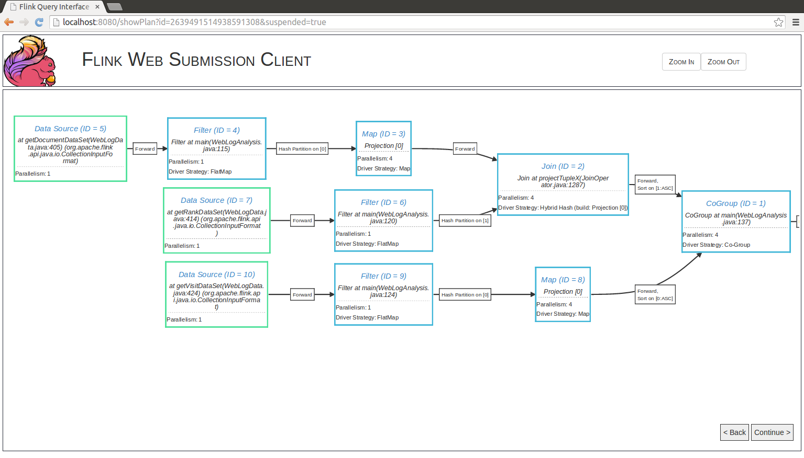

Flink programs are regular programs that implement transformations on distributed collections (e.g., filtering, mapping, updating state, joining, grouping, defining windows, aggregating). Collections are initially created from sources (e.g., by reading files, kafka, or from local collections). Results are returned via sinks, which may for example write the data to (distributed) files, or to standard output (for example the command line terminal). Flink programs run in a variety of contexts, standalone, or embedded in other programs. The execution can happen in a local JVM, or on clusters of many machines.
Depending on the type of data sources, i.e. bounded or unbounded sources you would either write a batch program or a streaming program where the DataSet API is used for the former and the DataStream API is used for the latter. This guide will introduce the basic concepts that are common to both APIs but please see our Streaming Guide and Batch Guide for concrete information about writing programs with each API.
NOTE: When showing actual examples of how the APIs can be used we will use
StreamingExecutionEnvironment and the DataStream API. The concepts are exactly the same
in the DataSet API, just replace by ExecutionEnvironment and DataSet.
To write programs with Flink, you need to include the Flink library corresponding to your programming language in your project.
The simplest way to do this is to use one of the quickstart scripts: either for Java or for Scala. They create a blank project from a template (a Maven Archetype), which sets up everything for you. To manually create the project, you can use the archetype and create a project by calling:
mvn archetype:generate \
-DarchetypeGroupId=org.apache.flink \
-DarchetypeArtifactId=flink-quickstart-java \
-DarchetypeVersion=1.1-SNAPSHOTmvn archetype:generate \
-DarchetypeGroupId=org.apache.flink \
-DarchetypeArtifactId=flink-quickstart-scala \
-DarchetypeVersion=1.1-SNAPSHOTThe archetypes are working for stable releases and preview versions (-SNAPSHOT).
If you want to add Flink to an existing Maven project, add the following entry to your dependencies section in the pom.xml file of your project:
<!-- Use this dependency if you are using the DataStream API -->
<dependency>
<groupId>org.apache.flink</groupId>
<artifactId>flink-streaming-java_2.10</artifactId>
<version>1.1-SNAPSHOT</version>
</dependency>
<!-- Use this dependency if you are using the DataSet API -->
<dependency>
<groupId>org.apache.flink</groupId>
<artifactId>flink-java</artifactId>
<version>1.1-SNAPSHOT</version>
</dependency>
<dependency>
<groupId>org.apache.flink</groupId>
<artifactId>flink-clients_2.10</artifactId>
<version>1.1-SNAPSHOT</version>
</dependency><!-- Use this dependency if you are using the DataStream API -->
<dependency>
<groupId>org.apache.flink</groupId>
<artifactId>flink-streaming-scala_2.10</artifactId>
<version>1.1-SNAPSHOT</version>
</dependency>
<!-- Use this dependency if you are using the DataSet API -->
<dependency>
<groupId>org.apache.flink</groupId>
<artifactId>flink-scala_2.10</artifactId>
<version>1.1-SNAPSHOT</version>
</dependency>
<dependency>
<groupId>org.apache.flink</groupId>
<artifactId>flink-clients_2.10</artifactId>
<version>1.1-SNAPSHOT</version>
</dependency>Important: When working with the Scala API you must have one of these two imports:
import org.apache.flink.api.scala._or
import org.apache.flink.api.scala.createTypeInformationThe reason is that Flink analyzes the types that are used in a program and generates serializers and comparaters for them. By having either of those imports you enable an implicit conversion that creates the type information for Flink operations.
Because Scala 2.10 binary is not compatible with Scala 2.11 binary, we provide multiple artifacts to support both Scala versions.
Starting from the 0.10 line, we cross-build all Flink modules for both 2.10 and 2.11. If you want
to run your program on Flink with Scala 2.11, you need to add a _2.11 suffix to the artifactId
values of the Flink modules in your dependencies section.
If you are looking for building Flink with Scala 2.11, please check build guide.
If you are using Flink together with Hadoop, the version of the dependency may vary depending on the version of Hadoop (or more specifically, HDFS) that you want to use Flink with. Please refer to the downloads page for a list of available versions, and instructions on how to link with custom versions of Hadoop.
In order to link against the latest SNAPSHOT versions of the code, please follow this guide.
The flink-clients dependency is only necessary to invoke the Flink program locally (for example to run it standalone for testing and debugging). If you intend to only export the program as a JAR file and run it on a cluster, you can skip that dependency.
Flink has the special classes DataSet and DataStream to represent data in a program. You
can think of them as immutable collections of data that can contain duplicates. In the case
of DataSet the data is finite while for a DataStream the number of elements can be unbounded.
These collections differ from regular Java collections in some key ways. First, they are immutable, meaning that once they are created you cannot add or remove elements. You can also not simply inspect the elements inside.
A collection is initially created by adding a source in a Flink program and new collections are
derived from these by transforming them using API methods such as map, filter and so on.
Flink program programs look like regular programs that transform collections of data. Each program consists of the same basic parts:
execution environment,We will now give an overview of each of those steps, please refer to the respective sections for more details. Note that all core classes of the Java DataSet API are found in the package org.apache.flink.api.java while the classes of the Java DataStream API can be found in org.apache.flink.streaming.api.
The StreamExecutionEnvironment is the basis for all Flink programs. You can
obtain one using these static methods on StreamExecutionEnvironment:
getExecutionEnvironment()
createLocalEnvironment()
createRemoteEnvironment(String host, int port, String... jarFiles)Typically, you only need to use getExecutionEnvironment(), since this
will do the right thing depending on the context: if you are executing
your program inside an IDE or as a regular Java program it will create
a local environment that will execute your program on your local machine. If
you created a JAR file from your program, and invoke it through the
command line, the Flink cluster manager
will execute your main method and getExecutionEnvironment() will return
an execution environment for executing your program on a cluster.
For specifying data sources the execution environment has several methods to read from files using various methods: you can just read them line by line, as CSV files, or using completely custom data input formats. To just read a text file as a sequence of lines, you can use:
final StreamExecutionEnvironment env = StreamExecutionEnvironment.getExecutionEnvironment();
DataStream<String> text = env.readTextFile("file:///path/to/file");This will give you a DataStream on which you can then apply transformations to create new derived DataStreams.
You apply transformations by calling methods on DataStream with a transformation functions. For example, a map transformation looks like this:
DataStream<String> input = ...;
DataStream<Integer> parsed = input.map(new MapFunction<String, Integer>() {
@Override
public Integer map(String value) {
return Integer.parseInt(value);
}
});This will create a new DataStream by converting every String in the original collection to an Integer.
Once you have a DataStream containing your final results, you can write it to an outside system by creating a sink. These are just some example methods for creating a sink:
writeAsText(String path)
print()We will now give an overview of each of those steps, please refer to the respective sections for more details. Note that all core classes of the Scala DataSet API are found in the package org.apache.flink.api.scala while the classes of the Scala DataStream API can be found in org.apache.flink.streaming.api.scala.
The StreamExecutionEnvironment is the basis for all Flink programs. You can
obtain one using these static methods on StreamExecutionEnvironment:
getExecutionEnvironment()
createLocalEnvironment()
createRemoteEnvironment(host: String, port: Int, jarFiles: String*)Typically, you only need to use getExecutionEnvironment(), since this
will do the right thing depending on the context: if you are executing
your program inside an IDE or as a regular Java program it will create
a local environment that will execute your program on your local machine. If
you created a JAR file from your program, and invoke it through the
command line, the Flink cluster manager
will execute your main method and getExecutionEnvironment() will return
an execution environment for executing your program on a cluster.
For specifying data sources the execution environment has several methods to read from files using various methods: you can just read them line by line, as CSV files, or using completely custom data input formats. To just read a text file as a sequence of lines, you can use:
val env = StreamExecutionEnvironment.getExecutionEnvironment()
val text: DataStream[String] = env.readTextFile("file:///path/to/file")This will give you a DataStream on which you can then apply transformations to create new derived DataStreams.
You apply transformations by calling methods on DataSet with a transformation functions. For example, a map transformation looks like this:
val input: DataSet[String] = ...
val mapped = input.map { x => x.toInt }This will create a new DataStream by converting every String in the original collection to an Integer.
Once you have a DataStream containing your final results, you can write it to an outside system by creating a sink. These are just some example methods for creating a sink:
writeAsText(path: String)
print()Once you specified the complete program you need to trigger the program execution by calling
execute() on the StreamExecutionEnvironment.
Depending on the type of the ExecutionEnvironment the execution will be triggered on your local
machine or submit your program for execution on a cluster.
The execute() method is returning a JobExecutionResult, this contains execution
times and accumulator results.
Please see the Streaming Guide for information about streaming data sources and sink and for more in-depths information about the supported transformations on DataStream.
Check out the Batch Guide for information about batch data sources and sink and for more in-depths information about the supported transformations on DataSet.
All Flink programs are executed lazily: When the program’s main method is executed, the data loading
and transformations do not happen directly. Rather, each operation is created and added to the
program’s plan. The operations are actually executed when the execution is explicitly triggered by
an execute() call on the execution environment. Whether the program is executed locally
or on a cluster depends on the type of execution environment
The lazy evaluation lets you construct sophisticated programs that Flink executes as one holistically planned unit.
Some transformations (join, coGroup, keyBy, groupBy) require that a key be defined on a collection of elements. Other transformations (Reduce, GroupReduce, Aggregate, Windows) allow data being grouped on a key before they are applied.
A DataSet is grouped as
DataSet<...> input = // [...]
DataSet<...> reduced = input
.groupBy(/*define key here*/)
.reduceGroup(/*do something*/);while a key can be specified on a DataStream using
DataStream<...> input = // [...]
DataStream<...> windowed = input
.key(/*define key here*/)
.window(/*window specification*/);The data model of Flink is not based on key-value pairs. Therefore, you do not need to physically pack the data set types into keys and values. Keys are “virtual”: they are defined as functions over the actual data to guide the grouping operator.
NOTE: In the following discussion we will use the DataStream API and keyBy.
For the DataSet API you just have to replace by DataSet and groupBy.
The simplest case is grouping Tuples on one or more fields of the Tuple:
DataStream<Tuple3<Integer,String,Long>> input = // [...]
KeyedStream<Tuple3<Integer,String,Long> keyed = input.keyBy(0)val input: DataStream[(Int, String, Long)] = // [...]
val keyed = input.keyBy(0)The tuples is grouped on the first field (the one of Integer type).
DataStream<Tuple3<Integer,String,Long>> input = // [...]
KeyedStream<Tuple3<Integer,String,Long> keyed = input.keyBy(0,1)val input: DataSet[(Int, String, Long)] = // [...]
val grouped = input.groupBy(0,1)Here, we group the tuples on a composite key consisting of the first and the second field.
A note on nested Tuples: If you have a DataStream with a nested tuple, such as:
DataStream<Tuple3<Tuple2<Integer, Float>,String,Long>> ds;Specifying keyBy(0) will cause the system to use the full Tuple2 as a key (with the Integer and Float being the key). If you want to “navigate” into the nested Tuple2, you have to use field expression keys which are explained below.
You can use String-based field expressions to reference nested fields and define keys for grouping, sorting, joining, or coGrouping.
Field expressions make it very easy to select fields in (nested) composite types such as Tuple and POJO types.
In the example below, we have a WC POJO with two fields “word” and “count”. To group by the field word, we just pass its name to the groupBy() function.
// some ordinary POJO (Plain old Java Object)
public class WC {
public String word;
public int count;
}
DataStream<WC> words = // [...]
DataStream<WC> wordCounts = words.keyBy("word").window(/*window specification*/);Field Expression Syntax:
Select POJO fields by their field name. For example "user" refers to the “user” field of a POJO type.
Select Tuple fields by their field name or 0-offset field index. For example "f0" and "5" refer to the first and sixth field of a Java Tuple type, respectively.
You can select nested fields in POJOs and Tuples. For example "user.zip" refers to the “zip” field of a POJO which is stored in the “user” field of a POJO type. Arbitrary nesting and mixing of POJOs and Tuples is supported such as "f1.user.zip" or "user.f3.1.zip".
You can select the full type using the "*" wildcard expressions. This does also work for types which are not Tuple or POJO types.
Field Expression Example:
public static class WC {
public ComplexNestedClass complex; //nested POJO
private int count;
// getter / setter for private field (count)
public int getCount() {
return count;
}
public void setCount(int c) {
this.count = c;
}
}
public static class ComplexNestedClass {
public Integer someNumber;
public float someFloat;
public Tuple3<Long, Long, String> word;
public IntWritable hadoopCitizen;
}These are valid field expressions for the example code above:
"count": The count field in the WC class.
"complex": Recursively selects all fields of the field complex of POJO type ComplexNestedClass.
"complex.word.f2": Selects the last field of the nested Tuple3.
"complex.hadoopCitizen": Selects the Hadoop IntWritable type.
In the example below, we have a WC POJO with two fields “word” and “count”. To group by the field word, we just pass its name to the groupBy() function.
// some ordinary POJO (Plain old Java Object)
class WC(var word: String, var count: Int) {
def this() { this("", 0L) }
}
val words: DataStream[WC] = // [...]
val wordCounts = words.keyBy("word").window(/*window specification*/)
// or, as a case class, which is less typing
case class WC(word: String, count: Int)
val words: DataStream[WC] = // [...]
val wordCounts = words.keyBy("word").reduce(/*window specification*/)Field Expression Syntax:
Select POJO fields by their field name. For example "user" refers to the “user” field of a POJO type.
Select Tuple fields by their 1-offset field name or 0-offset field index. For example "_1" and "5" refer to the first and sixth field of a Scala Tuple type, respectively.
You can select nested fields in POJOs and Tuples. For example "user.zip" refers to the “zip” field of a POJO which is stored in the “user” field of a POJO type. Arbitrary nesting and mixing of POJOs and Tuples is supported such as "_2.user.zip" or "user._4.1.zip".
You can select the full type using the "_" wildcard expressions. This does also work for types which are not Tuple or POJO types.
Field Expression Example:
class WC(var complex: ComplexNestedClass, var count: Int) {
def this() { this(null, 0) }
}
class ComplexNestedClass(
var someNumber: Int,
someFloat: Float,
word: (Long, Long, String),
hadoopCitizen: IntWritable) {
def this() { this(0, 0, (0, 0, ""), new IntWritable(0)) }
}These are valid field expressions for the example code above:
"count": The count field in the WC class.
"complex": Recursively selects all fields of the field complex of POJO type ComplexNestedClass.
"complex.word._3": Selects the last field of the nested Tuple3.
"complex.hadoopCitizen": Selects the Hadoop IntWritable type.
An additional way to define keys are “key selector” functions. A key selector function takes a single element as input and returns the key for the element. The key can be of any type and be derived from arbitrary computations.
The following example shows a key selector function that simply returns the field of an object:
// some ordinary POJO
public class WC {public String word; public int count;}
DataStream<WC> words = // [...]
KeyedStream<WC> kyed = words
.keyBy(new KeySelector<WC, String>() {
public String getKey(WC wc) { return wc.word; }
});// some ordinary case class
case class WC(word: String, count: Int)
val words: DataStream[WC] = // [...]
val keyed = words.keyBy( _.word )Most transformations require user-defined functions. This section lists different ways of how they can be specified
The most basic way is to implement one of the provided interfaces:
class MyMapFunction implements MapFunction<String, Integer> {
public Integer map(String value) { return Integer.parseInt(value); }
});
data.map(new MyMapFunction());You can pass a function as an anonymous class:
data.map(new MapFunction<String, Integer> () {
public Integer map(String value) { return Integer.parseInt(value); }
});Flink also supports Java 8 Lambdas in the Java API. Please see the full Java 8 Guide.
data.filter(s -> s.startsWith("http://"));data.reduce((i1,i2) -> i1 + i2);All transformations that require a user-defined function can instead take as argument a rich function. For example, instead of
class MyMapFunction implements MapFunction<String, Integer> {
public Integer map(String value) { return Integer.parseInt(value); }
});you can write
class MyMapFunction extends RichMapFunction<String, Integer> {
public Integer map(String value) { return Integer.parseInt(value); }
});and pass the function as usual to a map transformation:
data.map(new MyMapFunction());Rich functions can also be defined as an anonymous class:
data.map (new RichMapFunction<String, Integer>() {
public Integer map(String value) { return Integer.parseInt(value); }
});As already seen in previous examples all operations accept lambda functions for describing the operation:
val data: DataSet[String] = // [...]
data.filter { _.startsWith("http://") }val data: DataSet[Int] = // [...]
data.reduce { (i1,i2) => i1 + i2 }
// or
data.reduce { _ + _ }All transformations that take as argument a lambda function can instead take as argument a rich function. For example, instead of
data.map { x => x.toInt }you can write
class MyMapFunction extends RichMapFunction[String, Int] {
def map(in: String):Int = { in.toInt }
})and pass the function to a map transformation:
data.map(new MyMapFunction())Rich functions can also be defined as an anonymous class:
data.map (new RichMapFunction[String, Int] {
def map(in: String):Int = { in.toInt }
})Rich functions provide, in addition to the user-defined function (map,
reduce, etc), four methods: open, close, getRuntimeContext, and
setRuntimeContext. These are useful for parameterizing the function
(see Passing Parameters to Functions),
creating and finalizing local state, accessing broadcast variables (see
Broadcast Variables, and for accessing runtime
information such as accumulators and counters (see
Accumulators and Counters, and information
on iterations (see Iterations).
Flink places some restrictions on the type of elements that can be in a DataSet or DataStream. The reason for this is that the system analyzes the types to determine efficient execution strategies.
There are six different categories of data types:
Tuples are composite types that contain a fixed number of fields with various types.
The Java API provides classes from Tuple1 up to Tuple25. Every field of a tuple
can be an arbitrary Flink type including further tuples, resulting in nested tuples. Fields of a
tuple can be accessed directly using the field’s name as tuple.f4, or using the generic getter method
tuple.getField(int position). The field indices start at 0. Note that this stands in contrast
to the Scala tuples, but it is more consistent with Java’s general indexing.
DataStream<Tuple2<String, Integer>> wordCounts = env.fromElements(
new Tuple2<String, Integer>("hello", 1),
new Tuple2<String, Integer>("world", 2));
wordCounts.map(new MapFunction<Tuple2<String, Integer>, Integer>() {
@Override
public String map(Tuple2<String, Integer> value) throws Exception {
return value.f1;
}
});
wordCounts.keyBy(0); // also valid .keyBy("f0")Scala case classes (and Scala tuples which are a special case of case classes), are composite types that contain a fixed number of fields with various types. Tuple fields are addressed by their 1-offset names such as _1 for the first field. Case class fields are accessed by their name.
case class WordCount(word: String, count: Int)
val input = env.fromElements(
WordCount("hello", 1),
WordCount("world", 2)) // Case Class Data Set
input.keyBy("word")// key by field expression "word"
val input2 = env.fromElements(("hello", 1), ("world", 2)) // Tuple2 Data Set
input2.keyBy(0, 1) // key by field positions 0 and 1Java and Scala classes are treated by Flink as a special POJO data type if they fulfill the following requirements:
The class must be public.
It must have a public constructor without arguments (default constructor).
All fields are either public or must be accessible through getter and setter functions. For a field called foo the getter and setter methods must be named getFoo() and setFoo().
The type of a field must be supported by Flink. At the moment, Flink uses Avro to serialize arbitrary objects (such as Date).
Flink analyzes the structure of POJO types, i.e., it learns about the fields of a POJO. As a result POJO types are easier to use than general types. Moreover, Flink can process POJOs more efficiently than general types.
The following example shows a simple POJO with two public fields.
public class WordWithCount {
public String word;
public int count;
public WordWithCount() {}
public WordWithCount(String word, int count) {
this.word = word;
this.count = count;
}
}
DataStream<Tuple2<String, Integer>> wordCounts = env.fromElements(
new WordWithCount("hello", 1),
new WordWithCount("world", 2));
wordCounts.keyBy("word"); // key by field expression "word"class WordWithCount(var word: String, var count: Int) {
def this() {
this(null, -1)
}
}
val input = env.fromElements(
new WordWithCount("hello", 1),
new WordWithCount("world", 2)) // Case Class Data Set
input.keyBy("word")// key by field expression "word"Flink supports all Java and Scala primitive types such as Integer, String, and Double.
Flink supports most Java and Scala classes (API and custom). Restrictions apply to classes containing fields that cannot be serialized, like file pointers, I/O streams, or other native resources. Classes that follow the Java Beans conventions work well in general.
All classes that are not identified as POJO types (see POJO requirements above) are handled by Flink as general class types. Flink treats these data types as black boxes and is not able to access their their content (i.e., for efficient sorting). General types are de/serialized using the serialization framework Kryo.
Value types describe their serialization and deserialization manually. Instead of going through a
general purpose serialization framework, they provide custom code for those operations by means of
implementing the org.apache.flinktypes.Value interface with the methods read and write. Using
a Value type is reasonable when general purpose serialization would be highly inefficient. An
example would be a data type that implements a sparse vector of elements as an array. Knowing that
the array is mostly zero, one can use a special encoding for the non-zero elements, while the
general purpose serialization would simply write all array elements.
The org.apache.flinktypes.CopyableValue interface supports manual internal cloning logic in a
similar way.
Flink comes with pre-defined Value types that correspond to basic data types. (ByteValue,
ShortValue, IntValue, LongValue, FloatValue, DoubleValue, StringValue, CharValue,
BooleanValue). These Value types act as mutable variants of the basic data types: Their value can
be altered, allowing programmers to reuse objects and take pressure off the garbage collector.
You can use types that implement the org.apache.hadoop.Writable interface. The serialization logic
defined in the write()and readFields() methods will be used for serialization.
You can use special types, including Scala’s Either, Option, and Try.
The Java API has its own custom implementation of Either.
Similarly to Scala’s Either, it represents a value of one two possible types, Left or Right.
Either can be useful for error handling or operators that need to output two different types of records.
Note: This Section is only relevant for Java.
The Java compiler throws away much of the generic type information after compilation. This is
known as type erasure in Java. It means that at runtime, an instance of an object does not know
its generic type any more. For example, instances of DataStream<String> and DataStream<Long> look the
same to the JVM.
Flink requires type information at the time when it prepares the program for execution (when the
main method of the program is called). The Flink Java API tries to reconstruct the type information
that was thrown away in various ways and store it explicitly in the data sets and operators. You can
retrieve the type via DataStream.getType(). The method returns an instance of TypeInformation,
which is Flink’s internal way of representing types.
The type inference has its limits and needs the “cooperation” of the programmer in some cases.
Examples for that are methods that create data sets from collections, such as
ExecutionEnvironment.fromCollection(), where you can pass an argument that describes the type. But
also generic functions like MapFunction<I, O> may need extra type information.
The ResultTypeQueryable interface can be implemented by input formats and functions to tell the API explicitly about their return type. The input types that the functions are invoked with can usually be inferred by the result types of the previous operations.
The StreamExecutionEnvironment also contains the ExecutionConfig which allows to set job specific configuration values for the runtime.
StreamExecutionEnvironment env = StreamExecutionEnvironment.getExecutionEnvironment();
ExecutionConfig executionConfig = env.getConfig();val env = StreamExecutionEnvironment.getExecutionEnvironment
var executionConfig = env.getConfigThe following configuration options are available: (the default is bold)
enableClosureCleaner() / disableClosureCleaner(). The closure cleaner is enabled by default. The closure cleaner removes unneeded references to the surrounding class of anonymous functions inside Flink programs.
With the closure cleaner disabled, it might happen that an anonymous user function is referencing the surrounding class, which is usually not Serializable. This will lead to exceptions by the serializer.
getParallelism() / setParallelism(int parallelism) Set the default parallelism for the job.
getNumberOfExecutionRetries() / setNumberOfExecutionRetries(int numberOfExecutionRetries) Sets the number of times that failed tasks are re-executed. A value of zero effectively disables fault tolerance. A value of -1 indicates that the system default value (as defined in the configuration) should be used.
getExecutionRetryDelay() / setExecutionRetryDelay(long executionRetryDelay) Sets the delay in milliseconds that the system waits after a job has failed, before re-executing it. The delay starts after all tasks have been successfully been stopped on the TaskManagers, and once the delay is past, the tasks are re-started. This parameter is useful to delay re-execution in order to let certain time-out related failures surface fully (like broken connections that have not fully timed out), before attempting a re-execution and immediately failing again due to the same problem. This parameter only has an effect if the number of execution re-tries is one or more.
getExecutionMode() / setExecutionMode(). The default execution mode is PIPELINED. Sets the execution mode to execute the program. The execution mode defines whether data exchanges are performed in a batch or on a pipelined manner.
enableForceKryo() / disableForceKryo. Kryo is not forced by default. Forces the GenericTypeInformation to use the Kryo serializer for POJOS even though we could analyze them as a POJO. In some cases this might be preferable. For example, when Flink’s internal serializers fail to handle a POJO properly.
enableForceAvro() / disableForceAvro(). Avro is not forced by default. Forces the Flink AvroTypeInformation to use the Avro serializer instead of Kryo for serializing Avro POJOs.
enableObjectReuse() / disableObjectReuse() By default, objects are not reused in Flink. Enabling the object reuse mode will instruct the runtime to reuse user objects for better performance. Keep in mind that this can lead to bugs when the user-code function of an operation is not aware of this behavior.
enableSysoutLogging() / disableSysoutLogging() JobManager status updates are printed to System.out by default. This setting allows to disable this behavior.
getGlobalJobParameters() / setGlobalJobParameters() This method allows users to set custom objects as a global configuration for the job. Since the ExecutionConfig is accessible in all user defined functions, this is an easy method for making configuration globally available in a job.
addDefaultKryoSerializer(Class<?> type, Serializer<?> serializer) Register a Kryo serializer instance for the given type.
addDefaultKryoSerializer(Class<?> type, Class<? extends Serializer<?>> serializerClass) Register a Kryo serializer class for the given type.
registerTypeWithKryoSerializer(Class<?> type, Serializer<?> serializer) Register the given type with Kryo and specify a serializer for it. By registering a type with Kryo, the serialization of the type will be much more efficient.
registerKryoType(Class<?> type) If the type ends up being serialized with Kryo, then it will be registered at Kryo to make sure that only tags (integer IDs) are written. If a type is not registered with Kryo, its entire class-name will be serialized with every instance, leading to much higher I/O costs.
registerPojoType(Class<?> type) Registers the given type with the serialization stack. If the type is eventually serialized as a POJO, then the type is registered with the POJO serializer. If the type ends up being serialized with Kryo, then it will be registered at Kryo to make sure that only tags are written. If a type is not registered with Kryo, its entire class-name will be serialized with every instance, leading to much higher I/O costs.
Note that types registered with registerKryoType() are not available to Flink’s Kryo serializer instance.
disableAutoTypeRegistration() Automatic type registration is enabled by default. The automatic type registration is registering all types (including sub-types) used by usercode with Kryo and the POJO serializer.
setTaskCancellationInterval(long interval) Sets the the interval (in milliseconds) to wait between consecutive attempts to cancel a running task. When a task is canceled a new thread is created which periodically calls interrupt() on the task thread, if the task thread does not terminate within a certain time. This parameter refers to the time between consecutive calls to interrupt() and is set by default to 30000 milliseconds, or 30 seconds.
The RuntimeContext which is accessible in Rich* functions through the getRuntimeContext() method also allows to access the ExecutionConfig in all user defined functions.
As described earlier, Flink programs can be executed on
clusters by using a remote environment. Alternatively, programs can be packaged into JAR Files
(Java Archives) for execution. Packaging the program is a prerequisite to executing them through the
command line interface.
To support execution from a packaged JAR file via the command line or web interface, a program must
use the environment obtained by StreamExecutionEnvironment.getExecutionEnvironment(). This environment
will act as the cluster’s environment when the JAR is submitted to the command line or web
interface. If the Flink program is invoked differently than through these interfaces, the
environment will act like a local environment.
To package the program, simply export all involved classes as a JAR file. The JAR file’s manifest
must point to the class that contains the program’s entry point (the class with the public
main method). The simplest way to do this is by putting the main-class entry into the
manifest (such as main-class: org.apache.flinkexample.MyProgram). The main-class attribute is
the same one that is used by the Java Virtual Machine to find the main method when executing a JAR
files through the command java -jar pathToTheJarFile. Most IDEs offer to include that attribute
automatically when exporting JAR files.
Additionally, we support packaging programs as Plans. Instead of defining a progam in the main
method and calling
execute() on the environment, plan packaging returns the Program Plan, which is a description of
the program’s data flow. To do that, the program must implement the
org.apache.flink.api.common.Program interface, defining the getPlan(String...) method. The
strings passed to that method are the command line arguments. The program’s plan can be created from
the environment via the ExecutionEnvironment#createProgramPlan() method. When packaging the
program’s plan, the JAR manifest must point to the class implementing the
org.apache.flinkapi.common.Program interface, instead of the class with the main method.
The overall procedure to invoke a packaged program is as follows:
The JAR’s manifest is searched for a main-class or program-class attribute. If both attributes are found, the program-class attribute takes precedence over the main-class attribute. Both the command line and the web interface support a parameter to pass the entry point class name manually for cases where the JAR manifest contains neither attribute.
If the entry point class implements the org.apache.flinkapi.common.Program, then the system
calls the getPlan(String...) method to obtain the program plan to execute.
If the entry point class does not implement the org.apache.flinkapi.common.Program interface,
the system will invoke the main method of the class.
Accumulators are simple constructs with an add operation and a final accumulated result, which is available after the job ended.
The most straightforward accumulator is a counter: You can increment it using the
Accumulator.add(V value) method. At the end of the job Flink will sum up (merge) all partial
results and send the result to the client. Accumulators are useful during debugging or if you
quickly want to find out more about your data.
Flink currently has the following built-in accumulators. Each of them implements the Accumulator interface.
How to use accumulators:
First you have to create an accumulator object (here a counter) in the user-defined transformation function where you want to use it.
private IntCounter numLines = new IntCounter();Second you have to register the accumulator object, typically in the open() method of the
rich function. Here you also define the name.
getRuntimeContext().addAccumulator("num-lines", this.numLines);You can now use the accumulator anywhere in the operator function, including in the open() and
close() methods.
this.numLines.add(1);The overall result will be stored in the JobExecutionResult object which is
returned from the execute() method of the execution environment
(currently this only works if the execution waits for the
completion of the job).
myJobExecutionResult.getAccumulatorResult("num-lines")All accumulators share a single namespace per job. Thus you can use the same accumulator in different operator functions of your job. Flink will internally merge all accumulators with the same name.
A note on accumulators and iterations: Currently the result of accumulators is only available after the overall job ended. We plan to also make the result of the previous iteration available in the next iteration. You can use Aggregators to compute per-iteration statistics and base the termination of iterations on such statistics.
Custom accumulators:
To implement your own accumulator you simply have to write your implementation of the Accumulator interface. Feel free to create a pull request if you think your custom accumulator should be shipped with Flink.
You have the choice to implement either Accumulator or SimpleAccumulator.
Accumulator<V,R> is most flexible: It defines a type V for the value to add, and a
result type R for the final result. E.g. for a histogram, V is a number and R is
a histogram. SimpleAccumulator is for the cases where both types are the same, e.g. for counters.
This section describes how the parallel execution of programs can be configured in Flink. A Flink program consists of multiple tasks (transformations/operators, data sources, and sinks). A task is split into several parallel instances for execution and each parallel instance processes a subset of the task’s input data. The number of parallel instances of a task is called its parallelism.
The parallelism of a task can be specified in Flink on different levels.
The parallelism of an individual operator, data source, or data sink can be defined by calling its
setParallelism() method. For example, like this:
final StreamExecutionEnvironment env = StreamExecutionEnvironment.getExecutionEnvironment();
DataStream<String> text = [...]
DataStream<Tuple2<String, Integer>> wordCounts = text
.flatMap(new LineSplitter())
.keyBy(0)
.timeWindow(Time.seconds(5))
.sum(1).setParallelism(5);
wordCounts.print();
env.execute("Word Count Example");val env = StreamExecutionEnvironment.getExecutionEnvironment
val text = [...]
val wordCounts = text
.flatMap{ _.split(" ") map { (_, 1) } }
.keyBy(0)
.timeWindow(Time.seconds(5))
.sum(1).setParallelism(5)
wordCounts.print()
env.execute("Word Count Example")As mentioned here Flink programs are executed in the context of an execution environment. An execution environment defines a default parallelism for all operators, data sources, and data sinks it executes. Execution environment parallelism can be overwritten by explicitly configuring the parallelism of an operator.
The default parallelism of an execution environment can be specified by calling the
setParallelism() method. To execute all operators, data sources, and data sinks with a parallelism
of 3, set the default parallelism of the execution environment as follows:
final StreamExecutionEnvironment env = StreamExecutionEnvironment.getExecutionEnvironment();
env.setParallelism(3);
DataStream<String> text = [...]
DataStream<Tuple2<String, Integer>> wordCounts = [...]
wordCounts.print();
env.execute("Word Count Example");val env = StreamExecutionEnvironment.getExecutionEnvironment
env.setParallelism(3)
val text = [...]
val wordCounts = text
.flatMap{ _.split(" ") map { (_, 1) } }
.keyBy(0)
.timeWindow(Time.seconds(5))
.sum(1)
wordCounts.print()
env.execute("Word Count Example")The parallelism can be set at the Client when submitting jobs to Flink. The Client can either be a Java or a Scala program. One example of such a Client is Flink’s Command-line Interface (CLI).
For the CLI client, the parallelism parameter can be specified with -p. For
example:
./bin/flink run -p 10 ../examples/*WordCount-java*.jar
In a Java/Scala program, the parallelism is set as follows:
try {
PackagedProgram program = new PackagedProgram(file, args);
InetSocketAddress jobManagerAddress = RemoteExecutor.getInetFromHostport("localhost:6123");
Configuration config = new Configuration();
Client client = new Client(jobManagerAddress, config, program.getUserCodeClassLoader());
// set the parallelism to 10 here
client.run(program, 10, true);
} catch (ProgramInvocationException e) {
e.printStackTrace();
}try {
PackagedProgram program = new PackagedProgram(file, args)
InetSocketAddress jobManagerAddress = RemoteExecutor.getInetFromHostport("localhost:6123")
Configuration config = new Configuration()
Client client = new Client(jobManagerAddress, new Configuration(), program.getUserCodeClassLoader())
// set the parallelism to 10 here
client.run(program, 10, true)
} catch {
case e: Exception => e.printStackTrace
}A system-wide default parallelism for all execution environments can be defined by setting the
parallelism.default property in ./conf/flink-conf.yaml. See the
Configuration documentation for details.
Depending on various parameters such as data size or number of machines in the cluster, Flink’s optimizer automatically chooses an execution strategy for your program. In many cases, it can be useful to know how exactly Flink will execute your program.
Plan Visualization Tool
Flink comes packaged with a visualization tool for execution plans. The HTML document containing
the visualizer is located under tools/planVisualizer.html. It takes a JSON representation of
the job execution plan and visualizes it as a graph with complete annotations of execution
strategies.
The following code shows how to print the execution plan JSON from your program:
final ExecutionEnvironment env = ExecutionEnvironment.getExecutionEnvironment();
...
System.out.println(env.getExecutionPlan());val env = ExecutionEnvironment.getExecutionEnvironment
...
println(env.getExecutionPlan())To visualize the execution plan, do the following:
planVisualizer.html with your web browser,After these steps, a detailed execution plan will be visualized.

Web Interface
Flink offers a web interface for submitting and executing jobs. The interface is part of the JobManager’s
web interface for monitoring, per default running on port 8081. Job submission via this interfaces requires
that you have set jobmanager.web.submit.enable: true in flink-conf.yaml.
You may specify program arguments before the job is executed. The plan visualization enables you to show the execution plan before executing the Flink job.